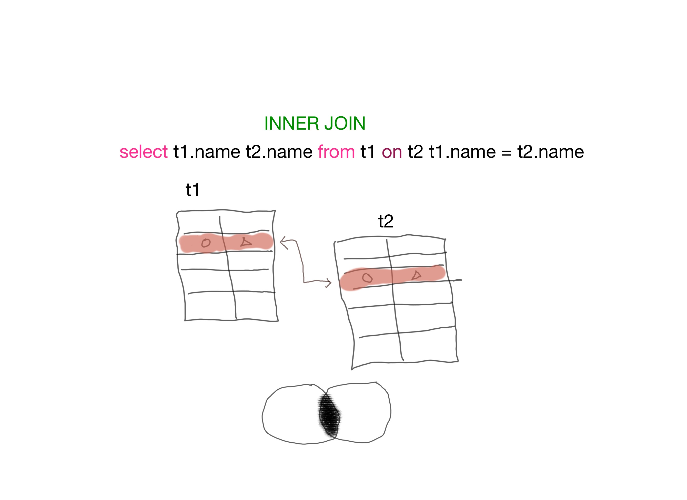

Connect to MySql Server from command line
-- login with user
mysql -u user
-- login with user and password
mysql -u user -p
Show database, show tables
-- show database
show databases;
-- show tables
show tables;
-- use specific database
use database_name;
-- source sql script
source mysql.sql
MySql and Sqlite
Sqlite is file-based, it is very portable. But it can not run on different machine.
Sqlite support less data types than MySql.
MySql can be ran on any machine with TCP/IP connection.
Create table
-- Create a simple table with auto increment primary key
CREAT TABLE person
(
id INTEGER NOT NULL AUTO_INCREMENT,
name VARCHAR(20),
email VARCHAR(50),
PRIMARY KEY(id)
);
Database SELECT, INSERT, DELETE, UPDATE
-- select from table
SELECT * FROM Table1;
-- select three columns from table
SELECT name, age, email FROM table1;
-- select three columns from table with predicate or where clause
SELECT name, age, email FROM table1 WHERE name = 'David'
-- inner join two tables: person and contact
SELECT person.name, person.email, contact.name FROM person INNER JOIN contact ON person.name = contact.name;
SQL JOIN in Picture
